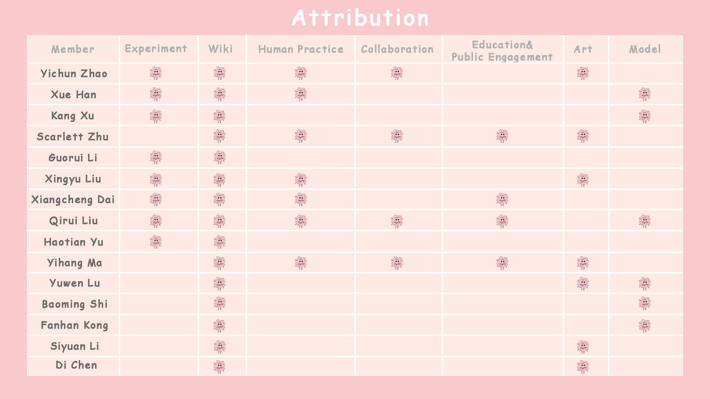
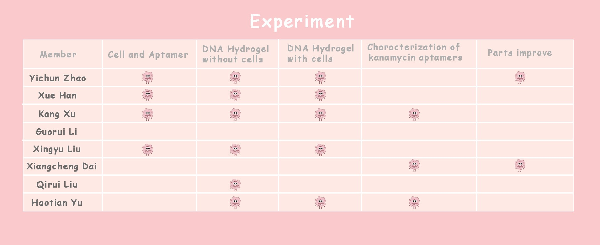

Yichun Zhao: Team Leader, responsible for the
experiment about the improvement of part.
Xue Han: The leader of human practice, responsible for
the experiment about DNA hydrogel with cells.
Kang Xu: The leader of experiment, responsible for the
experiment about DNA hydrogel without and with cells and the
characterization of Kanamycin aptamer.
Scarlett Zhu: Responsible for human practice,
collaboration, education, public engagement and translation.
GuoRui Li: Responsible for the experiment about DNA
hydrogel without and with cells.
Veronica Liu: Responsible for the experiment about the
characterization of Kanamycin aptamer.
XiangCheng Dai: Responsible for the experiment about
the improvement of part.
Qirui Liu: Responsible for the experiment about DNA
hydrogel without cells, model and collaboration.
Haotian Yu: Responsible for the experiment about DNA
hydrogel without and with cells and the characterization of Kanamycin
aptamer.
Yihang Ma: Responsible for human practice,
collaboration, education and public engagement.
Yuwen Lu: Responsible for the design and development of
our wiki.
Baoming Shi, Fanhan Kong: Responsible for the
mathematical model of this project.
Chen Di, Siyuan Li: Responsible for the design of our
posters, wiki, logo and everything else about art.